Cosa fare alla postazione macchina: accesso, avvio delle attività, attrezzaggio, lavorazione, pause, chiusura con le quantità, note e documenti.
Versione {{DATA}} · Per la consultazione rapida a bordo macchina c'è anche la Scheda rapida operatore (una pagina). Entrambi i documenti si aprono da EssentiaMES: icona Account in basso a destra.
Indice
1Regole di baseda leggere prima di iniziare
2Accedere a EssentiaMESutente, password, macchina associata
3La lista delle attivitàcosa c'è da fare sulla tua macchina
5Note e documenti della macchinadisegni, istruzioni, comunicazioni
6Attività in corsola schermata con il tempo che scorre
7Finire l'attrezzaggioe passare alla lavorazione
8Sospendere e riprenderepausa, fine turno, guasto, attesa materiale
9Concludere la lavorazionequantità prodotte e scarti
10Nascondere le attività inutilie rimetterle in lista
11Account: password e uscitae dove trovare queste procedure
12Problemi frequenticosa fare se qualcosa non va
1Regole di base
EssentiaMES registra cosa si lavora su ogni macchina, per quanto tempo e con quali quantità. Questi dati muovono i pezzi da un reparto all'altro, aggiornano i magazzini e vengono inviati ogni settimana ai responsabili con il resoconto dell'uso di ogni macchina. Per questo è importante registrare tutto nel momento in cui succede.
Ognuno usa il proprio utente. Non lavorare con l'utente di un collega: tempi e quantità risulterebbero a suo nome.
Una sola attività alla volta per macchina. Prima di iniziarne un'altra, sospendi o concludi quella in corso.
Avvia l'attività quando inizi davvero (attrezzaggio o lavorazione) e sospendila quando ti fermi: pausa lunga, fine turno, guasto, attesa materiale.
Le quantità sono sempre il TOTALE della fase: pezzi buoni in “Q.tà Prodotta”, pezzi da buttare in “Q.tà scartata”. Non indicare solo i pezzi fatti dall'ultima ripresa.
Se una registrazione è sbagliata, avvisa subito il responsabile: non “compensare” con la registrazione successiva.
Gli stati di un'attività
Stato
Significato
In attesa
Da fare: è nella tua lista e si può avviare.
In attrezzaggio
Stai preparando la macchina (montaggio, azzeramenti, programma, primo pezzo). Il tempo viene registrato come attrezzaggio.
In lavorazione
Stai producendo. Il tempo viene registrato come lavorazione.
Sospesa
Avviata e poi messa in pausa: in lista compare la scritta “(Attività precedentemente aperta)”.
Completata
Quantità raggiunta: la fase è chiusa e i pezzi passano alla fase successiva.
Bloccata
La fase precedente dello stesso ordine non è ancora finita: non compare nella tua lista finché non viene sbloccata.
2Accedere a EssentiaMES
Quando: a inizio turno, oppure quando il programma chiede di nuovo l'accesso.
Apri il browser della postazione e vai all'indirizzo di EssentiaMES (di solito è già nei preferiti; altrimenti chiedilo al responsabile).
Scrivi il tuo nome utente e la tua password. “Ricordami su questo dispositivo” evita di rifare l'accesso ogni giorno: usalo solo se la postazione non è condivisa con altri.
Premi Accedi. Si apre la lista delle attività della tua macchina.
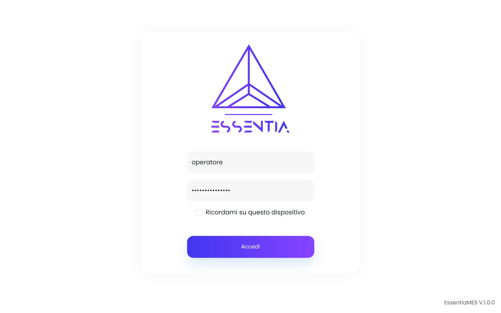
Pagina di accesso.
Se c'è un'attività in corsoSe avevi lasciato un'attività avviata, dopo l'accesso EssentiaMES apre direttamente la schermata “Attività in corso”. Il tempo ha continuato a scorrere anche a programma chiuso.
“Nessuna macchina associata”
Il tuo utente non è ancora collegato a una macchina. Non puoi lavorare finché il responsabile non fa l'associazione (Dashboard Macchina).
3La lista delle attività
Cosa vedi: “Selezione attività” elenca le fasi da fare sulla tua macchina, dalla più vecchia alla più recente. La pagina si aggiorna da sola ogni pochi secondi: i nuovi ordini compaiono senza ricaricare.
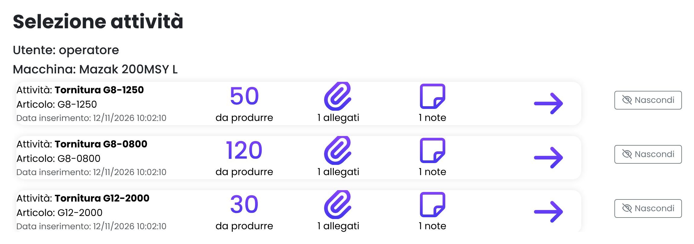
In alto il tuo utente e la tua macchina; sotto, una scheda per ogni attività.
Nella scheda
Significato
Attività
Nome della fase (es. “Tornitura G8-1250”).
Articolo
Codice del pezzo da lavorare.
Data inserimento
Quando l'attività è arrivata sulla tua macchina.
Numero grande
Quantità da produrre in questa fase.
Allegati / note
Documenti e note della macchina (vedi capitolo 5).
Freccia
Tocca la scheda per aprirla e avviare l'attività.
Nascondi
Toglie dalla lista un'attività che non ti serve (vedi capitolo 10).
4Avviare un'attività
Quando: nel momento in cui inizi a preparare la macchina (attrezzaggio) o a produrre (lavorazione).
Nella lista tocca la scheda dell'attività. Si apre la finestra Apri Attività.
Controlla articolo e quantità da produrre.
Nel campo Attività scegli:
Attrezzaggio: devi ancora preparare la macchina (montaggio attrezzature, azzeramento utensili, caricamento programma, primo pezzo);
Lavorazione: la macchina è già pronta e inizi subito a produrre.
Premi Avvia Attività. Si apre la schermata “Attività in corso” e parte il tempo.
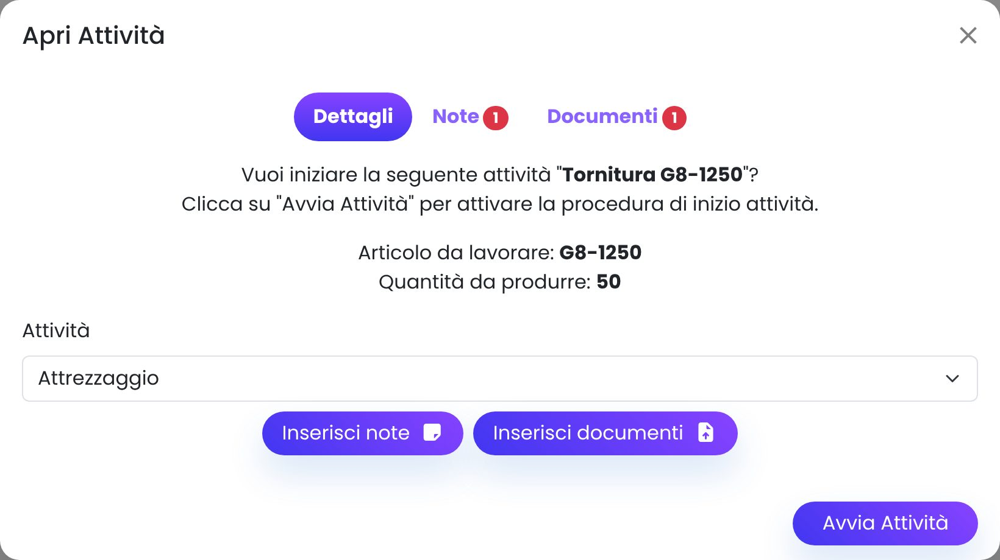
Finestra “Apri Attività”: qui scegli Attrezzaggio o Lavorazione.
Una sola attività alla voltaSe sulla macchina c'è già un'attività avviata, compare il messaggio “Sulla macchina è già in corso l'attività …”. Prima sospendi o concludi quella.
5Note e documenti della macchina
A cosa servono: disegni, istruzioni di attrezzaggio, schede di controllo e comunicazioni tra turni legate alla macchina. Le vedono tutti quelli che lavorano su quella macchina e il responsabile.
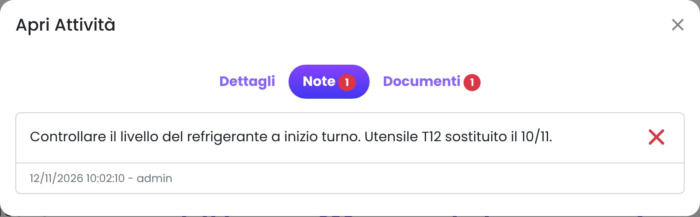
Scheda “Note”: testo, data e autore.
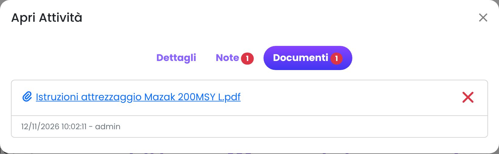
Scheda “Documenti”: tocca il nome del file per aprirlo.
Consultare
Tocca la scheda dell'attività per aprire la finestra “Apri Attività”.
Passa alla scheda Note o Documenti (il numero rosso indica quante ce ne sono).
Torna su Dettagli per avviare l'attività.
Aggiungere una nota o un documento
Nella scheda Dettagli premi Inserisci note oppure Inserisci documenti.
Scrivi il testo della nota, oppure scegli il file (foto, PDF, disegno) e conferma.
Buone abitudiniScrivi note brevi e utili a chi viene dopo, ad esempio “Utensile T12 sostituito”, “Refrigerante da rabboccare” o “Pezzo 23 da ricontrollare in quota 12,5”. La X rossa elimina una nota o un documento: usala solo per le tue note non più valide.
6Attività in corso
Cosa vedi: lo stato (In Attrezzaggio o In Lavorazione, con il pallino rosso lampeggiante), l'attività, l'articolo, l'obiettivo e il tempo trascorso.
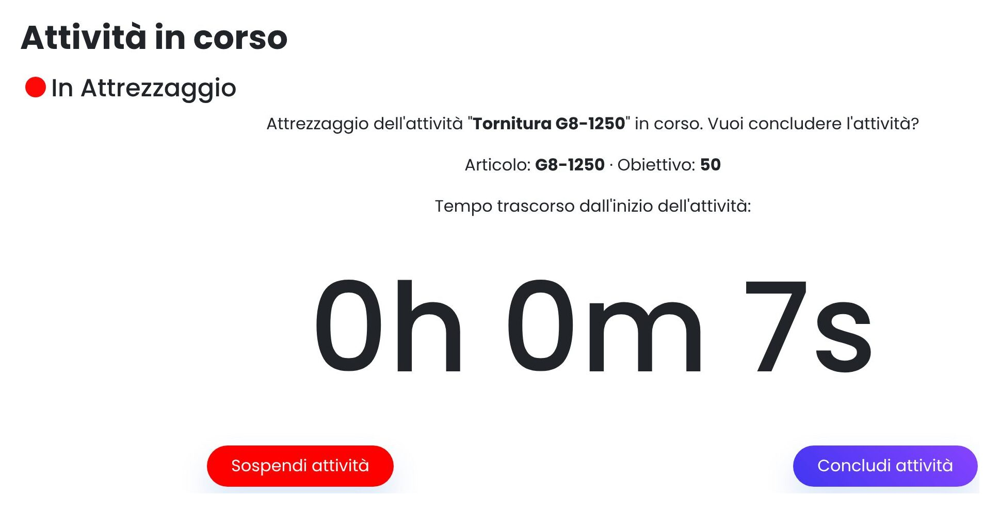
Attività in attrezzaggio: in basso i pulsanti per sospendere o concludere.
Sospendi attività: ti fermi ma la fase non è finita (capitolo 8).
Concludi attività: hai finito l'attrezzaggio (capitolo 7) oppure la lavorazione (capitolo 9).
Puoi chiudere il browserIl tempo viene registrato sul server: se chiudi la pagina, spegni lo schermo o cambi postazione non si perde nulla. Al prossimo accesso torni a questa schermata.
7Finire l'attrezzaggio
Quando: la macchina è pronta e inizi la produzione.
Nella schermata “Attività in corso” (In Attrezzaggio) premi Concludi attività.
Se durante l'attrezzaggio hai fatto pezzi di prova, indica quelli buoni in Q.tà Prodotta e quelli da scartare in Q.tà scartata. Altrimenti lascia 0.
Premi Salva. L'attività passa da sola In Lavorazione e il tempo riparte da zero, come lavorazione.
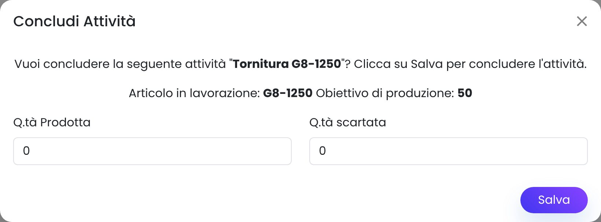
Fine attrezzaggio: quantità dei pezzi di prova.
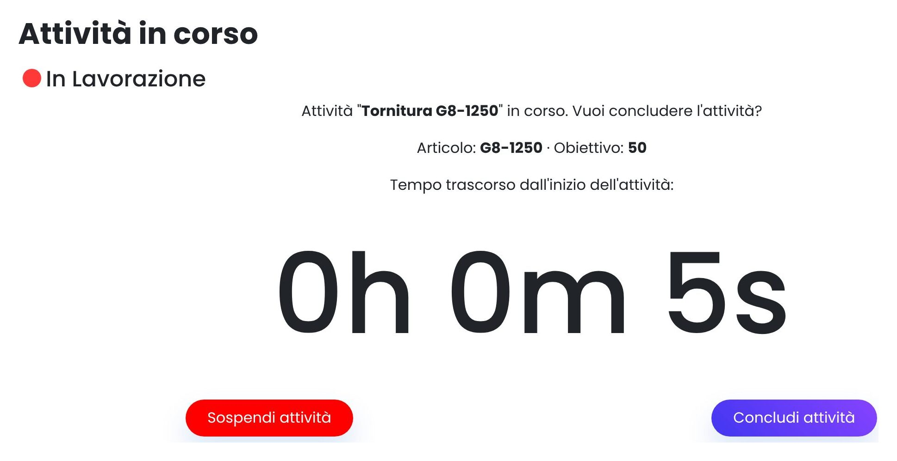
Subito dopo: la stessa attività in lavorazione.
8Sospendere e riprendere
Quando sospendere: fine turno, pausa lunga, guasto della macchina, attesa di materiale o di un controllo qualità, cambio urgente su un altro lavoro. Il tempo smette di essere conteggiato.
Sospendere
Nella schermata “Attività in corso” premi Sospendi attività.
Inserisci le quantità totali fatte finora in questa fase: pezzi buoni in Q.tà Prodotta, scarti in Q.tà scartata.
Premi Salva. Torni alla lista: l'attività ha la scritta “(Attività precedentemente aperta)”.
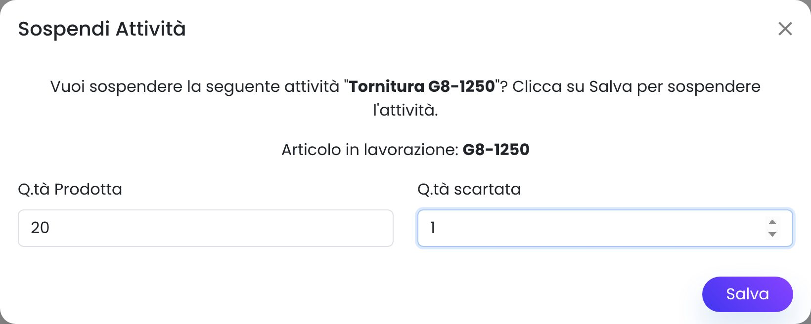
Sospensione: quantità fatte fino a questo momento.
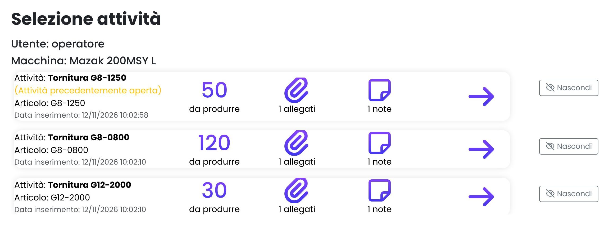
In lista l'attività sospesa è segnalata in giallo.
Riprendere
Tocca la scheda dell'attività sospesa. La finestra mostra le quantità registrate prima.
Scegli Lavorazione (oppure Attrezzaggio, se devi preparare di nuovo la macchina) e premi Avvia Attività.
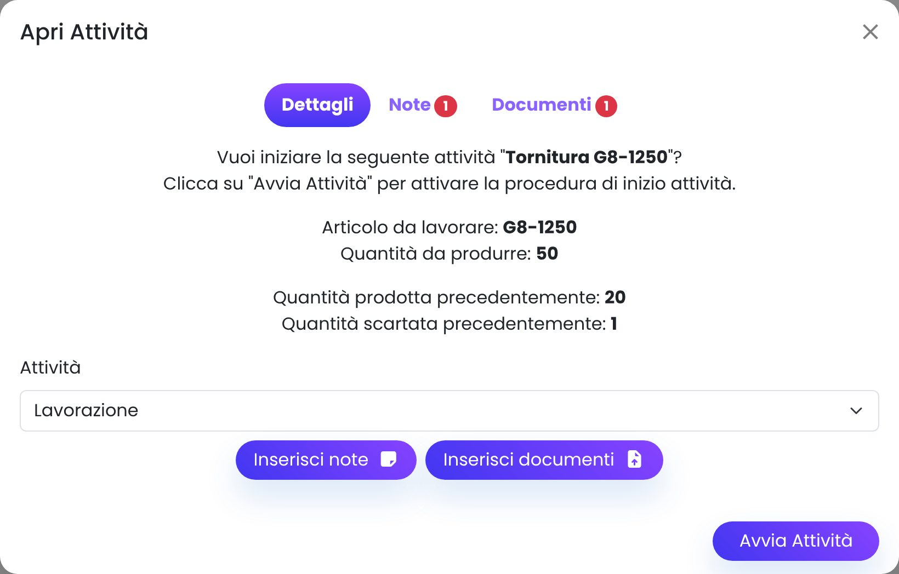
Ripresa di un'attività sospesa: in basso le quantità già registrate.
9Concludere la lavorazione
Quando: hai finito i pezzi della fase, oppure devi chiudere con una quantità parziale.
Nella schermata “Attività in corso” (In Lavorazione) premi Concludi attività.
Il campo Q.tà Prodotta contiene già quanto registrato in precedenza: scrivi il totale dei pezzi buoni della fase, comprese le quantità precedenti.
In Q.tà scartata scrivi il totale degli scarti.
Premi Salva.
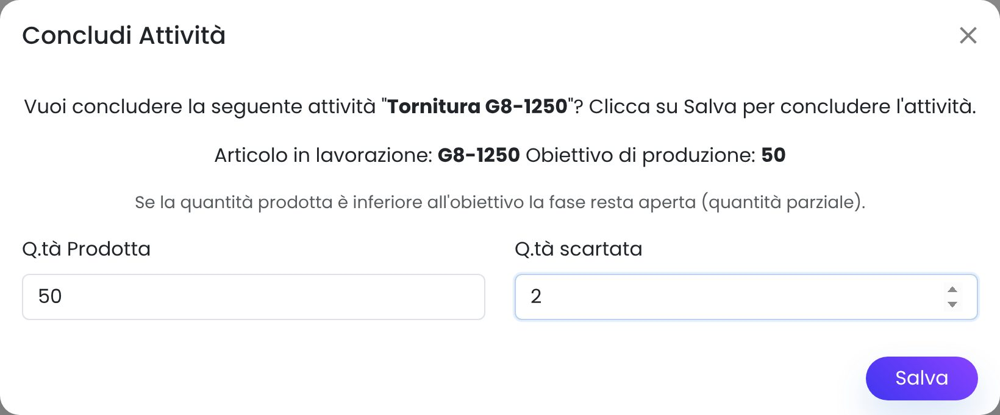
Chiusura: totale pezzi buoni e totale scarti della fase.
Cosa succede dopo il salvataggio
Caso
Risultato
Q.tà Prodotta uguale o superiore alla quantità da produrre
La fase è completata ed esce dalla tua lista. I pezzi vengono versati nel magazzino della fase successiva e la fase successiva si sblocca sulla sua macchina (ad esempio la fresatura dopo la tornitura).
Q.tà Prodotta inferiore alla quantità da produrre
Viene registrata una quantità parziale (es. “20/50”) e l'attività resta nella tua lista per essere completata più avanti.
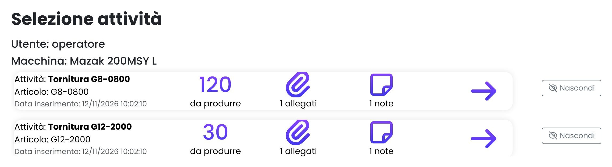
Dopo la chiusura completa l'attività non è più in lista.
Controlla i numeri prima di salvareCon la chiusura completa i pezzi vengono spostati di magazzino e la fase successiva parte. Se hai sbagliato, avvisa subito il responsabile.
10Nascondere le attività inutili
Quando: nella lista c'è un'attività che sulla tua macchina non serve (ad esempio una fase che per quell'articolo non si fa) e ti dà fastidio vederla ogni volta.
Nella lista premi Nascondi a destra dell'attività. L'attività sparisce dalla lista.
In alto compare “N attività nascoste”. Premi Mostra per rivederle: sono in grigio con l'etichetta “Nascosta dall'operatore”.
Per rimetterne una in lista premi Ripristina accanto all'attività.
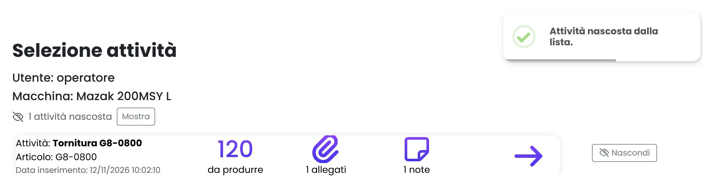
Un'attività nascosta: in alto il contatore e il pulsante Mostra.
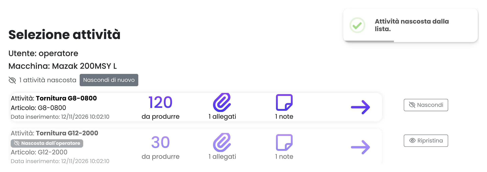
Con “Mostra” le nascoste ricompaiono in grigio, con il pulsante Ripristina.
Nascondere non chiude la fasePer il sistema l'attività resta da fare e il responsabile la vede nella scheda della macchina come “Nascosta dall'operatore”. Se la fase non va fatta davvero, avvisa il responsabile, che può correggere il ciclo di lavoro. Se avvii un'attività nascosta, torna visibile.
11Account: password e uscita
Dove: icona con l'omino in basso a destra.
Procedure operatore (PDF) e Scheda rapida operatore (PDF): aprono questi documenti.
Cambia Password: inserisci la password attuale e due volte quella nuova, poi premi “Cambia password”. Al primo accesso cambia la password ricevuta dal responsabile.
Logout: esci da EssentiaMES. Fallo sempre a fine turno se la postazione è usata da più persone.
La passwordScegli una password che solo tu conosci e non scriverla sulla macchina. Se la dimentichi, il responsabile può assegnartene una nuova.
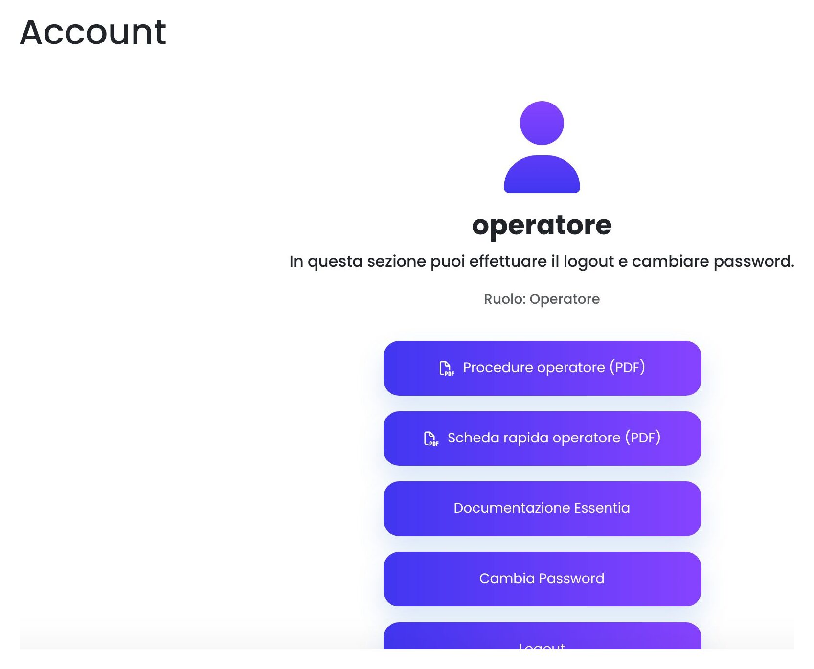
Pagina Account.
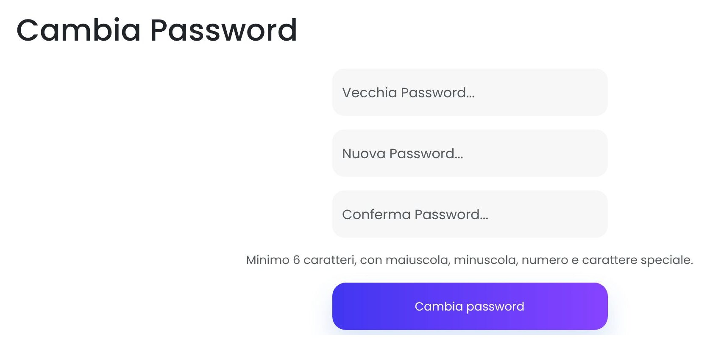
Cambio password.
12Problemi frequenti
Problema
Cosa fare
“Nessuna macchina associata”
Chiedi al responsabile di associare il tuo utente alla macchina.
L'attività che devi fare non è in lista
Premi Mostra in alto, se ci sono attività nascoste. Altrimenti la fase precedente non è ancora conclusa (attività bloccata), oppure l'ordine non è ancora stato creato: chiedi al responsabile.
“Sulla macchina è già in corso l'attività …”
Sulla macchina c'è un'altra attività avviata: aprila (pulsante Home in basso a sinistra), poi sospendila o concludila.
Ho avviato l'attività sbagliata
Premi subito Sospendi attività lasciando le quantità come sono, poi avvia quella giusta. Avvisa il responsabile se è passato molto tempo.
Ho salvato quantità sbagliate
Avvisa subito il responsabile indicando ordine, fase e quantità giuste. Non compensare con la registrazione successiva.
Ho dimenticato di sospendere a fine turno
Sospendi appena te ne accorgi e avvisa il responsabile: il tempo registrato su quella macchina sarà più lungo del reale.
“Sessione scaduta” o ritorno alla pagina di accesso
Rifai l'accesso. Le attività avviate restano come le avevi lasciate.
“Server non raggiungibile” oppure la pagina non si carica
Controlla che la postazione sia collegata alla rete e ricarica la pagina (tasto F5). Se il problema resta, avvisa il responsabile o l'informatico.
Un documento non si apre
La postazione potrebbe non avere il programma per quel tipo di file: chiedi al responsabile di caricarlo anche in PDF.